画像未配置
guide1-01-terms-scroll.png
LoopLive Web アプリの操作手順です。仕組みの説明は含みません。
| 画面 | ルート |
|---|---|
| ポータル（トップ） | / |
| サーバー管理 | /dashboard |
| 配信（リアルタイム加工） | /streaming/:instanceId |
| 写真フェイススワップ | /photo-face-swap |
| 利用料金 | /usage-billing |
| ユーザー管理 | /users |
| サーバーマスタ管理 | /master/servers |
| プロフィール | /profile |
| 呼び方 | 備考 |
|---|---|
| サインアップ | サインアップ画面 |
| 利用規約ダイアログ | — |
| 確認ダイアログ | 共通 |
| ユーザー詳細 | ダイアログ |
| ユーザー編集 | ダイアログ |
| サーバー登録 ステップ1 | ステップ1: 登録するインスタンスの選択 |
| サーバー登録 ステップ2 | ステップ2: 新規サーバー登録 |
| サーバー詳細 | ダイアログ |
| 利用履歴 | 利用料金から開くダイアログ |
| 処理履歴 | 写真フェイススワップ画面内 |
| OBS連携 | 配信画面・PC 表示のエリア |
| 画面上の権限 | 行える操作の概要 |
|---|---|
| 一般 | 配信開始/停止、写真フェイススワップ |
| クリエイター | 写真フェイススワップ |
| 運用 | ユーザー管理、利用料金確認 |
| システム管理者 | サーバーマスタ管理 |
| 利用不可 | （権限なし相当・表記は UI に合わせる） |
目標: ログインできること、適切な権限が付与されていること、利用可能なサーバーを選べること。
| No | 画面 | 操作 | 結果確認 |
|---|---|---|---|
| 1 | サインアップ | LoopLive 利用規約 が表示されるので、利用規約を最後までスクロールしてご確認ください。 が消えるまでスクロールする | 同意する が有効になる |
| 2 | 利用規約ダイアログ | 同意する を押す | サインアップ入力フォームが表示される |
| 3 | サインアップ | グループID（6文字英数字）を入力（表示されている値がある場合はその値を確認） | エラーが表示されない |
| 4 | サインアップ | Email（形式が正しい）と パスワード（8文字以上）を入力 | エラーが表示されない |
| 5 | サインアップ | Cognito 標準の「アカウントを作る」ボタンを押す | ログイン後にポータル画面が表示される |
| 6 | ポータル（トップ） | ユーザーを管理する を押す（運用者/管理者権限がある場合） | ユーザー管理画面が表示される |
| 7 | ユーザー管理 | 対象ユーザーのカードをクリック | ユーザー詳細 ダイアログが表示される |
| 8 | ユーザー詳細 | 編集 を押す | ユーザー編集 ダイアログに切り替わる |
| 9 | ユーザー編集 | 権限 を選択する（利用不可/一般/クリエイター/運用/システム管理者） | ドロップダウン選択が反映されている |
| 10 | ユーザー編集 | 配信アカウント情報 で 配信プラットフォーム / ID / パスワード を入力（行の追加は +） | 保存後に警告が出なくなる（次の手順で確認） |
| 11 | ユーザー編集 | （システム管理者でログインしている場合）ソース画像 で 画像を設定する（または 画像を変更する）→ 画像を選択する → 確定（必要なら クリア） | 画像が表示される |
| 12 | ユーザー編集 | 更新 を押す | ユーザー一覧に反映される |
| 13 | ポータル（トップ） | 配信を始める または 写真でフェイススワップする を押す | 対象機能の画面へ遷移する |
| 14 | ポータル（トップ） | サーバーマスタ管理 を押す（システム管理者の場合） | サーバーマスタ管理画面が表示される |
| 15 | サーバーマスタ管理 | サーバー登録 を押す | ステップ1: 登録するインスタンスの選択 が表示される |
| 16 | サーバー登録 ステップ1 | 対象インスタンスのラジオを選択 → 次へ | ステップ2: 新規サーバー登録 が表示される |
| 17 | サーバー登録 ステップ2 | グループID を入力（必須）→ 単価(USD) と MEMO を入力（必要に応じて）→ 登録 | サーバー一覧に追加される |
| 18 | ポータル（トップ） → サーバー管理 | 配信を始める → サーバー管理 で対象サーバーが表示されることを確認 | 入室できる状態または起動状態が確認できる |
次のファイル名で docs/assets/guides/（GitHub Pages 用）に PNG を置くと表示されます。未配置のときは「画像未配置」と表示されます。ログインや個人情報が写り込まないようマスクしてください。
画像未配置
guide1-01-terms-scroll.png

画像未配置
guide1-02-agree-terms.png
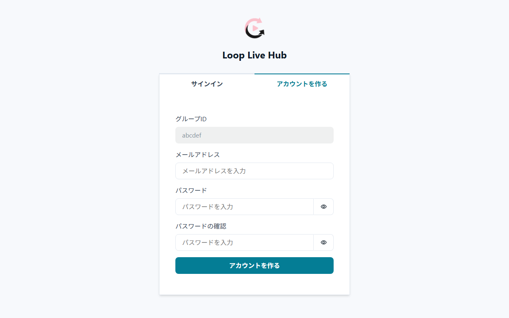
画像未配置
guide1-03-group-id.png

画像未配置
guide1-04-email-password.png

画像未配置
guide1-05-create-account.png

画像未配置
guide1-06-user-mgmt.png

画像未配置
guide1-07-user-card.png

画像未配置
guide1-08-user-detail-edit.png

画像未配置
guide1-09-role.png
画像未配置
guide1-10-stream-accounts.png
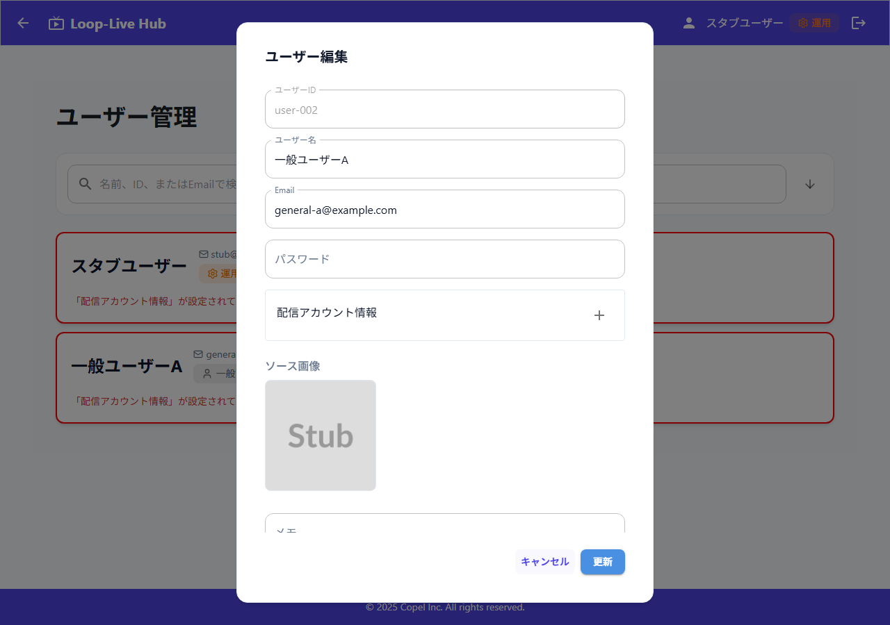
画像未配置
guide1-11-source-image.png

画像未配置
guide1-12-update-user.png

画像未配置
guide1-13-portal-features.png

画像未配置
guide1-14-server-master.png

画像未配置
guide1-15-register-server.png
画像未配置
guide1-16-server-step1.png

画像未配置
guide1-17-server-step2.png
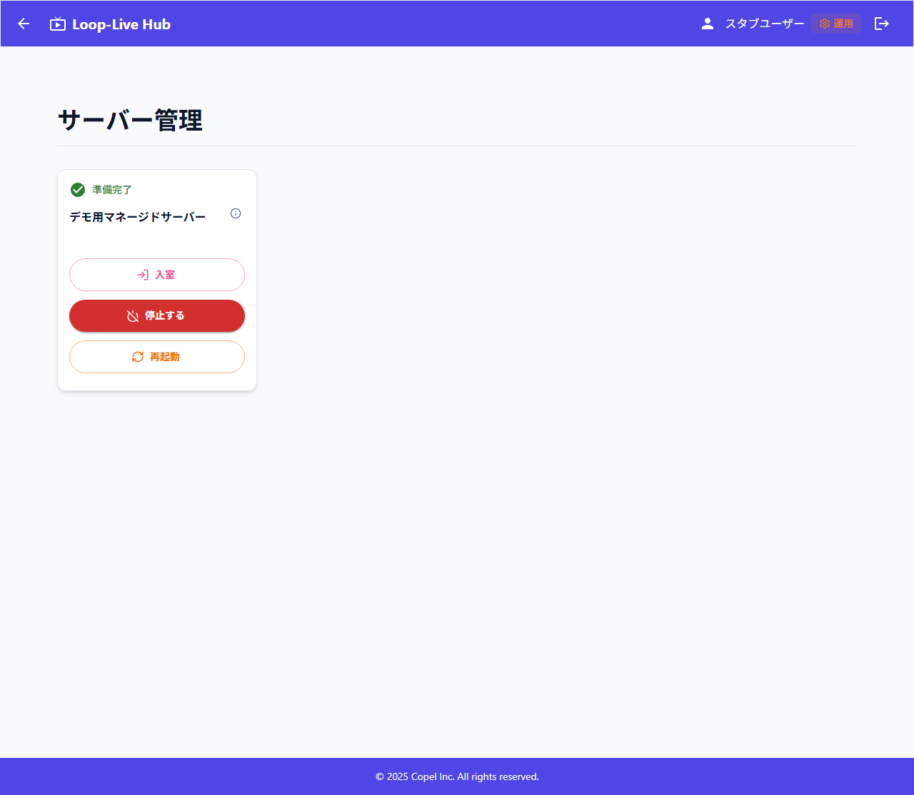
画像未配置
guide1-18-dashboard.png
目標: 加工開始 から 加工停止 まで動作すること。加工後の映像を見る または OBS 連携で加工映像を確認できること。
| No | 画面 | 操作 | 結果確認 |
|---|---|---|---|
| 1 | ポータル（トップ） | 配信を始める を押す | サーバー管理 画面が表示される |
| 2 | サーバー管理 | 対象サーバーカードで 入室 を押す | 配信（リアルタイム加工）の画面が開く |
| 3 | 配信（リアルタイム加工）・サーバー状態 | サーバー状態 が OFF または 起動失敗 の場合、起動する を押す | 確認ダイアログが表示される |
| 4 | 確認ダイアログ | はい を押す | サーバーを起動しています。このままお待ちください... が表示される |
| 5 | 配信（リアルタイム加工） | サーバー状態が 準備完了 になったのを確認する | カメラ 設定が有効になる（カメラに接続 が押せる） |
| 6 | 配信（リアルタイム加工） | カメラに接続 を押す | プレビューにカメラ映像が表示される（またはデバイス選択が有効） |
| 7 | 配信（リアルタイム加工） | カメラ の選択が必要な場合は、カメラ を選び直す | 画面の映像が切り替わる |
| 8 | 配信（リアルタイム加工） | 鼻下加工の切替を必要に応じて行う（鼻下を加工します / 鼻下を加工しません） | 文字表記が切り替わる |
| 9 | 配信（リアルタイム加工） | 加工開始 を押す | 確認ダイアログが表示される |
| 10 | 確認ダイアログ | はい を押す | ボタンが 加工処理中… になり、処理待ち状態になる |
| 11 | 配信（リアルタイム加工） | ボタンが 加工停止 になるのを待つ | 加工停止 が表示される |
| 12 | 配信（リアルタイム加工） | （必要に応じて）加工後の映像を見る を押す | 別タブで加工映像が表示される |
| 13 | 配信（リアルタイム加工） | 加工停止 を押す | ボタンが 加工開始 に戻る |
| 14 | 配信（リアルタイム加工）・サーバー状態 | サーバー状態が停止対象の場合、停止する を押す | 確認ダイアログが表示される |
| 15 | 確認ダイアログ | はい を押す | サーバーを停止しています。このままお待ちください... が表示され、状態が OFF になる |
ファイルは docs/assets/guides/ に配置。配信・サーバー起動・カメラ・加工には本番または検証環境のログインとインスタンスが必要です。

画像未配置
guide2-01-start-streaming.png

画像未配置
guide2-02-enter-room.png

画像未配置
guide2-03-start-server.png

画像未配置
guide2-04-confirm-start.png

画像未配置
guide2-05-server-ready.png

画像未配置
guide2-06-camera-connect.png

画像未配置
guide2-07-camera-select.png

画像未配置
guide2-08-nose-toggle.png

画像未配置
guide2-09-process-start.png
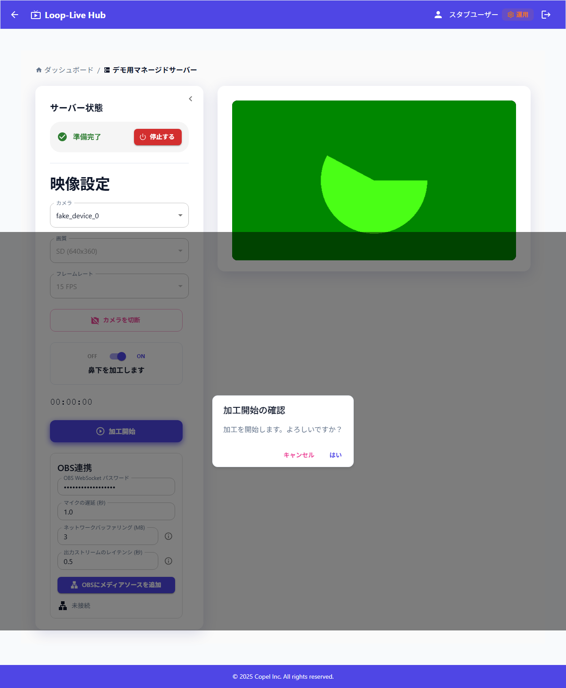
画像未配置
guide2-10-confirm-process.png

画像未配置
guide2-11-process-running.png

画像未配置
guide2-12-preview-output.png

画像未配置
guide2-13-process-stop.png
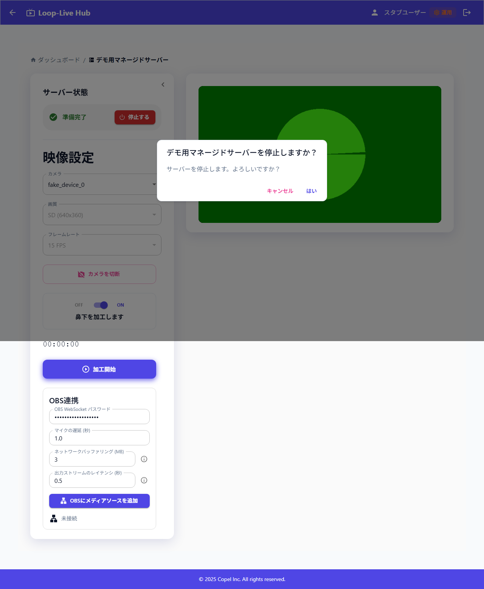
画像未配置
guide2-14-stop-server.png
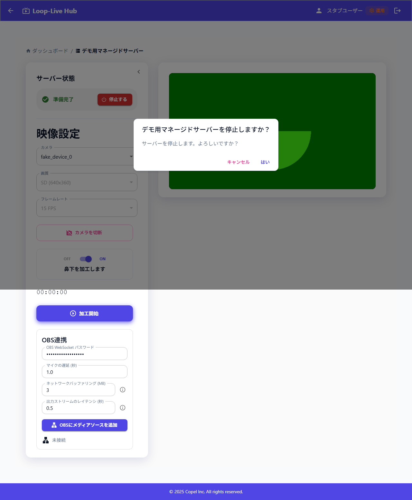
画像未配置
guide2-15-confirm-stop.png
| No | 画面 | 操作 | 結果確認 |
|---|---|---|---|
| 1 | 配信（リアルタイム加工）（PC表示） | OBS WebSocket パスワード を入力（空のままでも運用される場合がある） | 画面に入力が反映される |
| 2 | 配信（リアルタイム加工） | OBSにメディアソースを追加 を押す | UI に OBSに接続完了 または 接続失敗 が表示される／OBS 側で LoopLiveからの映像 ソースが追加される |
PC 表示の配信画面で撮影。OBS 側の画面も必要なら別名で docs/assets/guides/ に追加し、必要に応じて本文に追記してください。
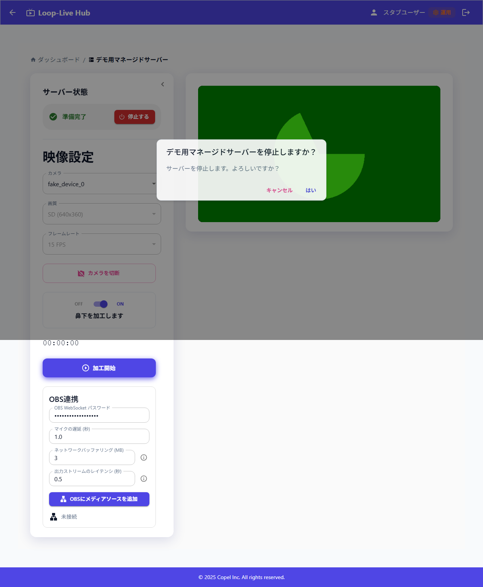
画像未配置
guide2-16-obs-ws-password.png
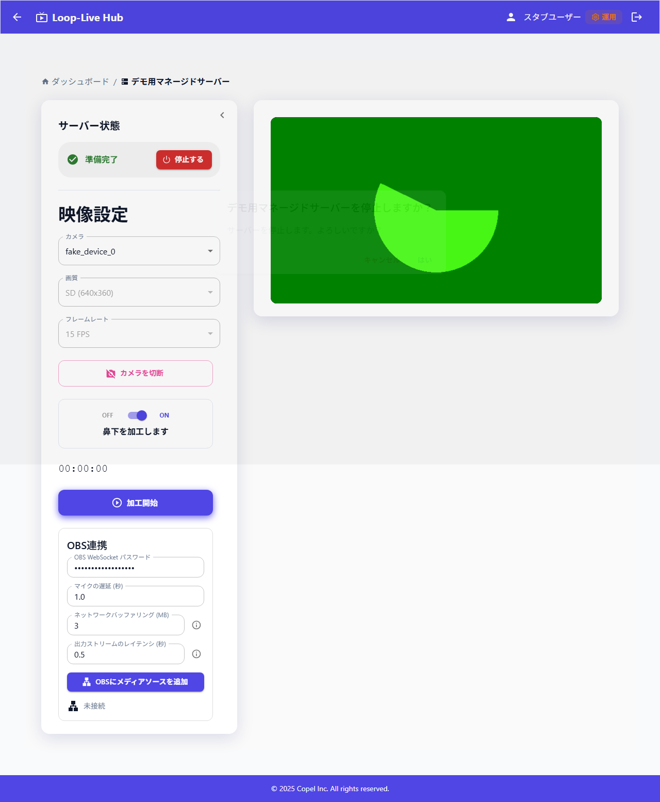
画像未配置
guide2-17-obs-add-source.png
起動処理中 / 準備中 / 準備完了 / 使用中 / 停止処理中 / OFF / 起動失敗
目標: フェイススワップする が完了し、処理履歴 に 完了 が表示されること。結果 を ダウンロード できること。
| No | 画面 | 操作 | 結果確認 |
|---|---|---|---|
| 1 | 写真フェイススワップ | 元の顔を選択 を押して、画像（JPG/PNG）をアップロード | プレビューが表示される |
| 2 | 写真フェイススワップ | なりたい顔を選択 を押して、画像（JPG/PNG）をアップロード | プレビューが表示される |
| 3 | 写真フェイススワップ | （必要に応じて）クリア を押して選び直す | 画像がリセットされる |
| 4 | 写真フェイススワップ | フェイススワップする を押す | 確認ダイアログが表示される |
| 5 | 確認ダイアログ | はい を押す | 処理中です... が表示される |
| 6 | 写真フェイススワップ | （自動反映または必要に応じて）処理履歴 の最新行に追加されるのを待つ | ステータスが表示される |
| 7 | 処理履歴 | ステータスが 完了 になるまで待つ | 完了 のチップが表示される |
| 8 | 処理履歴 | 結果 のダウンロード（PC: 下矢印アイコン、スマホ: ダウンロードボタン）を押す | 結果画像が表示/保存される |
写真フェイススワップはログイン後の画面です。アップロードする画像は著作権・肖像権に注意し、手順書用はダミー画像の利用を推奨します。

画像未配置
guide3-01-face-a.png

画像未配置
guide3-02-face-b.png
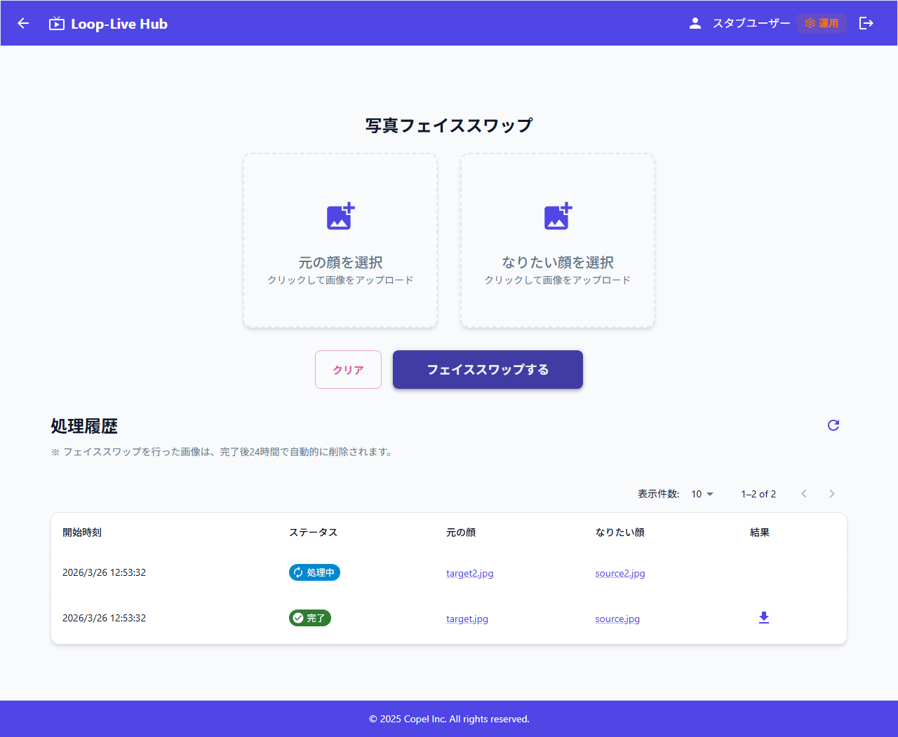
画像未配置
guide3-03-clear.png

画像未配置
guide3-04-swap-start.png

画像未配置
guide3-05-confirm.png
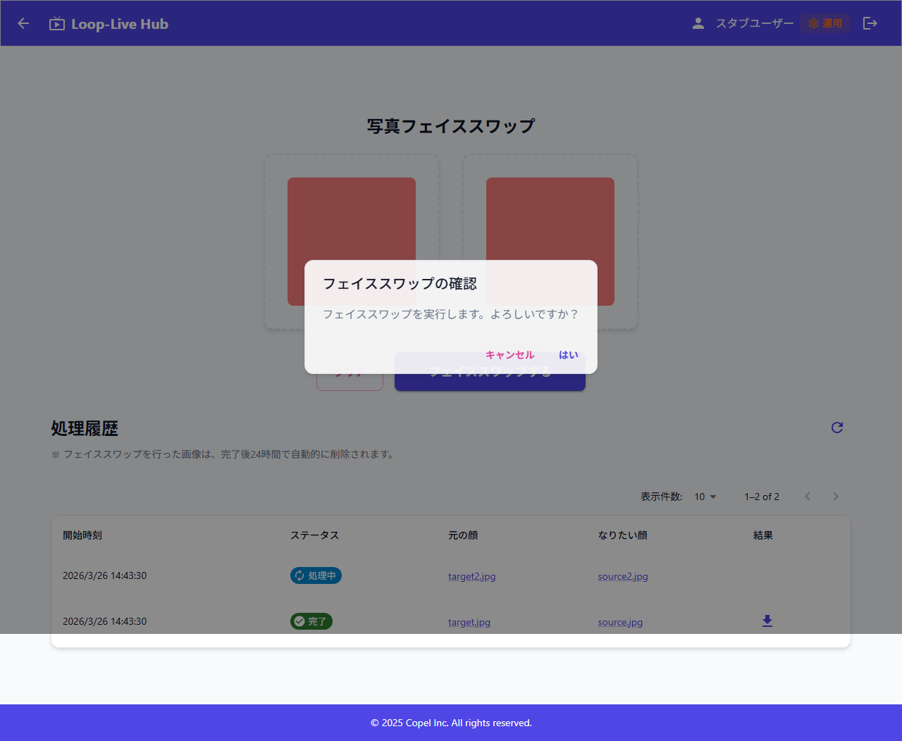
画像未配置
guide3-06-history-pending.png

画像未配置
guide3-07-history-done.png

画像未配置
guide3-08-download.png
待機中 / 処理中 / 完了 / 失敗
※ フェイススワップを行った画像は、完了後24時間で自動的に削除されます。
| No | 画面 | 操作 | 結果確認 |
|---|---|---|---|
| 1 | ポータル（トップ） | サーバー使用料を見る を押す | 利用料金 画面が表示される |
| 2 | 利用料金 | 左矢印（前の月）/ 右矢印（次の月）で対象月へ移動 | 見出し年月が切り替わる |
| 3 | 利用料金 | 合計利用時間 を確認 | 月次の合計利用時間が表示される |
| 4 | 利用料金 | 合計請求金額 を確認 | 月次の合計請求金額が表示される |
| 5 | 利用料金 | 明細テーブルでサーバー行をクリック | ダイアログで 利用履歴 が表示される |
| 6 | 利用履歴ダイアログ | ユーザー名 / 操作 / 日時 を確認 | 操作は 起動 または 停止 が表示される |
| 7 | 利用履歴ダイアログ | 閉じる を押す | ダイアログが閉じる |
| 8 | 利用料金 | フォトスワップ使用 の枚数を確認 | XX枚 が表示される |
運用権限が必要な画面です。金額・ユーザー名はマスクしてください。

画像未配置
guide4-01-billing-link.png

画像未配置
guide4-02-month-nav.png

画像未配置
guide4-03-total-hours.png

画像未配置
guide4-04-total-cost.png

画像未配置
guide4-05-row-click.png

画像未配置
guide4-06-history-dialog.png
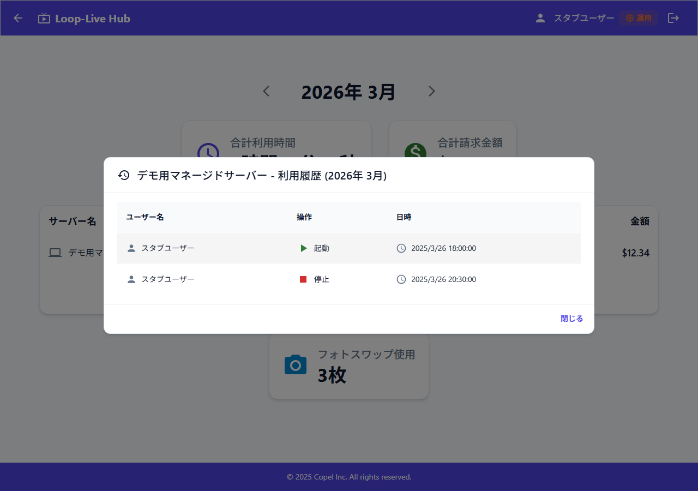
画像未配置
guide4-07-close-history.png
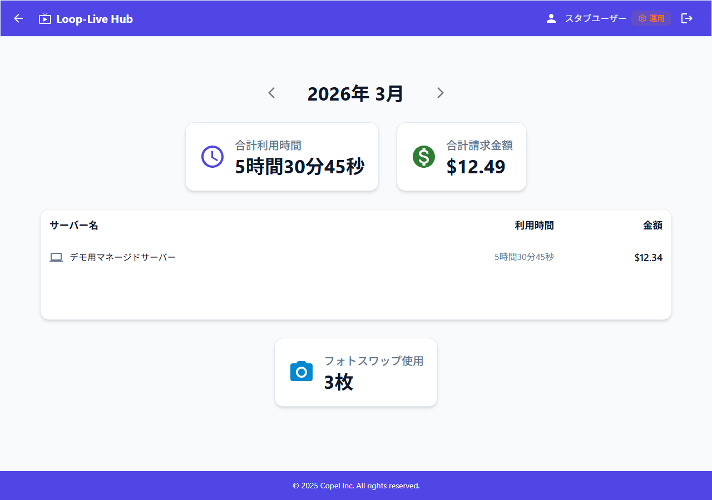
画像未配置
guide4-08-photo-count.png
| No | 画面 | 操作 | 結果確認 |
|---|---|---|---|
| 1 | ポータル（トップ） | ユーザーを管理する を押す | ユーザー管理 画面が表示される |
| 2 | ユーザー管理 | 検索欄（名前、ID、またはEmailで検索...）に条件を入力 | 一覧が絞り込まれる |
| 3 | ユーザー管理 | 対象ユーザーのカードをクリック | ユーザー詳細 が表示される |
| 4 | ユーザー詳細 | 編集 を押す | ユーザー編集 が表示される |
| 5 | ユーザー編集 | ユーザー名 と Email を必要に応じて更新 | 入力が反映される |
| 6 | ユーザー編集 | パスワード は 変更する場合のみ入力 を必要に応じて入力 | エラーが表示されない |
| 7 | ユーザー編集 | 権限 を必要に応じて変更 | ドロップダウンの選択が反映される |
| 8 | ユーザー編集 | 配信アカウント情報 で 配信プラットフォーム / ID / パスワード を入力（行追加: +） | 更新内容が反映される |
| 9 | ユーザー編集 | （システム管理者でログインしている場合）ソース画像 で 画像を設定する（または 画像を変更する）→ 画像を選択する → 確定（必要なら クリア） | 画像が表示される |
| 10 | ユーザー編集 | 更新 を押す | ユーザー一覧に反映される |
| 11 | ユーザー詳細 | 削除 を押す | 確認ダイアログが表示される |
| 12 | 確認ダイアログ | はい を押す | ユーザーが一覧から消える |
他ユーザーのメール・氏名が写らないようマスクしてください。

画像未配置
guide4-09-user-mgmt-link.png

画像未配置
guide4-10-search.png

画像未配置
guide4-11-user-card.png

画像未配置
guide4-12-edit-user.png

画像未配置
guide4-13-name-email.png

画像未配置
guide4-14-password.png

画像未配置
guide4-15-role.png

画像未配置
guide4-16-stream-accounts.png

画像未配置
guide4-17-source-image.png

画像未配置
guide4-18-update.png

画像未配置
guide4-19-delete.png

画像未配置
guide4-20-confirm-delete.png
| No | 画面 | 操作 | 結果確認 |
|---|---|---|---|
| 1 | ポータル（トップ） | サーバーマスタ管理 を押す | サーバーマスタ管理 画面が表示される |
| 2 | サーバーマスタ管理 | サーバー登録 を押す | ステップ1: 登録するインスタンスの選択 が表示される |
| 3 | サーバー登録 ステップ1 | インスタンスを選択して 次へ | ステップ2: 新規サーバー登録 が表示される |
| 4 | サーバー登録 ステップ2 | グループID を入力し、単価(USD) と MEMO を入力 → 登録 | 一覧に追加される |
| 5 | サーバーマスタ管理 | 対象カードをクリック | サーバー詳細 が表示される |
| 6 | サーバー詳細 | 編集 を押して変更 → 更新 | 一覧に反映される |
| 7 | サーバー詳細 | 削除 を押す → 確認で はい | 一覧から削除される |
システム管理者向けの画面です。インスタンス ID やメモに機密が含まれる場合はマスクしてください。
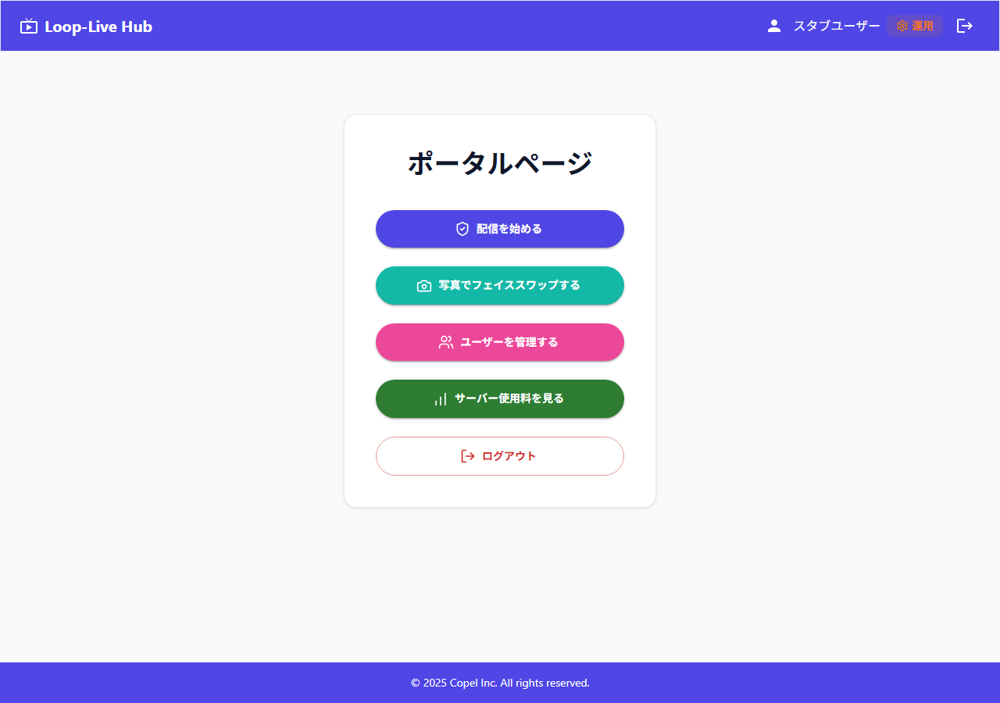
画像未配置
guide4-21-master-link.png
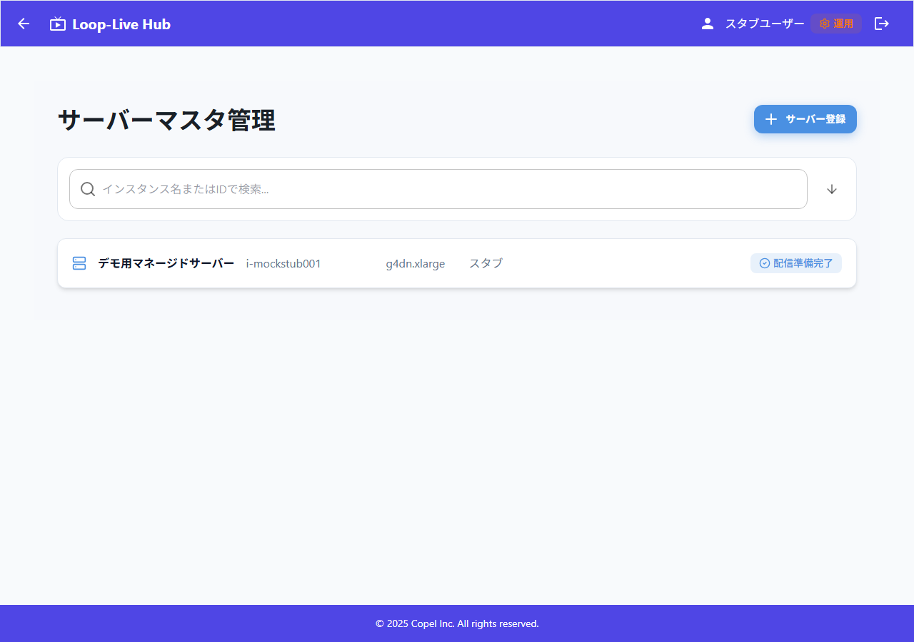
画像未配置
guide4-22-register.png
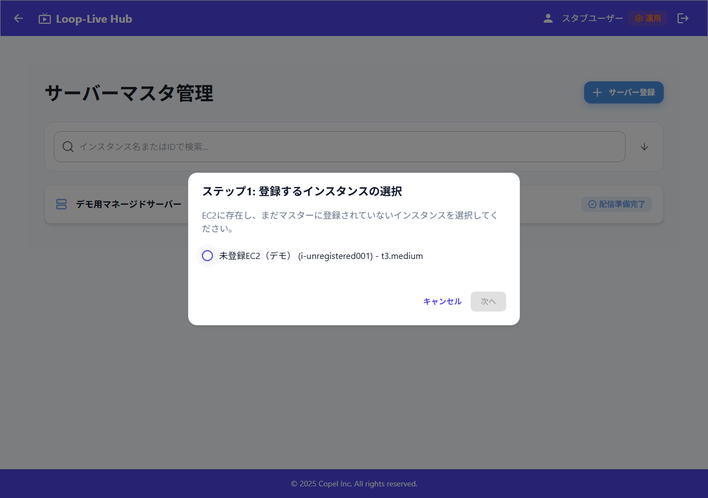
画像未配置
guide4-23-step1.png
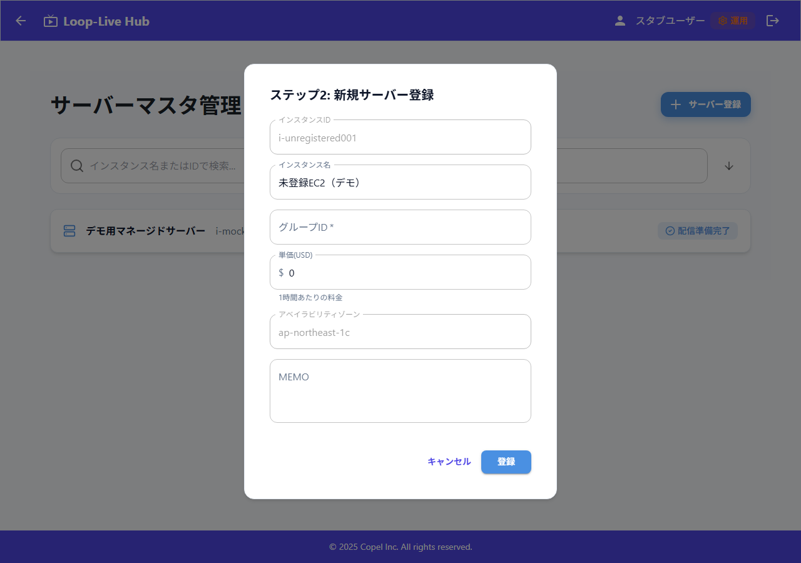
画像未配置
guide4-24-step2.png
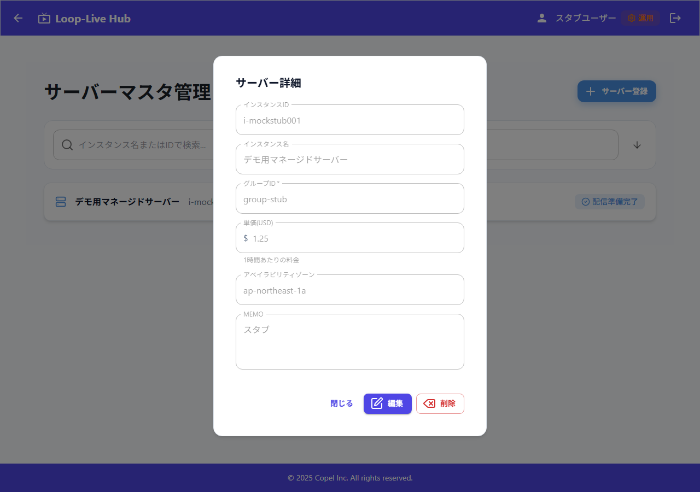
画像未配置
guide4-25-detail.png
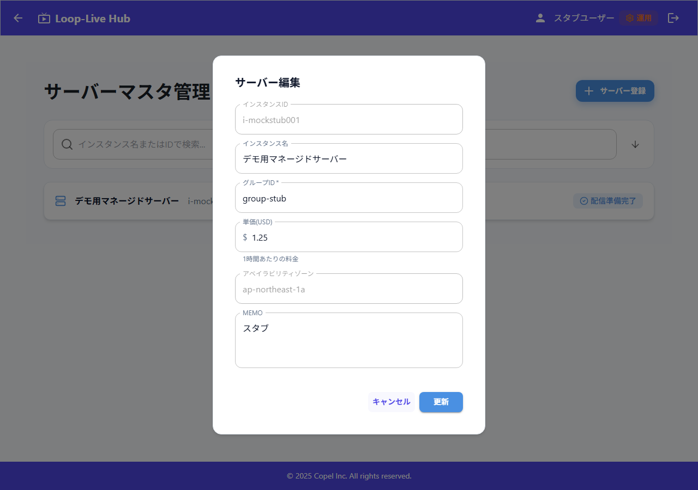
画像未配置
guide4-26-edit-server.png
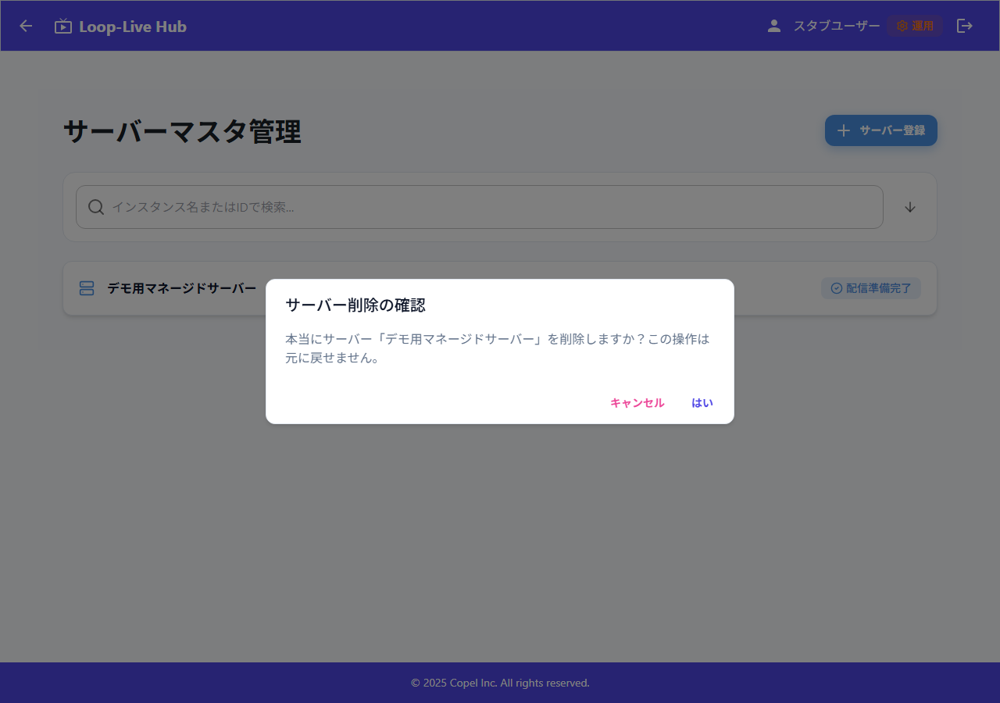
画像未配置
guide4-27-delete-server.png